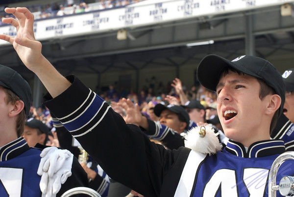
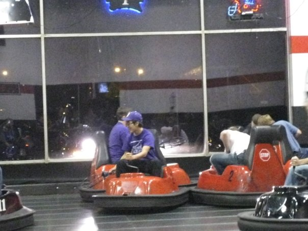

Fun
and Traditions
The Boneheads do more than
just play the trombone...
The Boneheads have a proud history and a fascinating set of traditions within and separate from NUMB. No single web page could ever hope to fully document these traditions, which are constantly evolving as new members join and leave their mark on the section. Even so, here are some highlights of the Boneheads' section culture:
Pride & Guts Central to all of NUMB, "P&G" best describes how the band approaches its work. We take pride in our music, our drill, our school, and our team, and we approach everything we do with guts, aiming for perfection. There are no fans louder and more dedicated than the members of the Northwestern University Marching Band. The Boneheads have embraced this mantra, defining a large part of the section culture. We strive to be the loudest section of the band, encouraging those around us even when the "Cardiac 'Cats" test our faith.
As evidence of this, Boneheads have been well-represented on NUMB's SpiriTeam (TM) for as long as Wikipedia has been keeping records. Boneheads have accounted for nearly one-third of the Spirit Leaders, Grynders, and official Band Geeks identified since 1975 that keep the band excited and lead the cheers in the stands.
The Bonehead Flag
 Central to our identity as a section, the flag serves as our emblem in
all things that we do. At the center of the black flag is a shield and
sword colored with purple, white, and gold, with "BONEHEADS" and "9th"
appearing in white lettering.
Central to our identity as a section, the flag serves as our emblem in
all things that we do. At the center of the black flag is a shield and
sword colored with purple, white, and gold, with "BONEHEADS" and "9th"
appearing in white lettering.Want to know the deep symbolism behind the colors, the crest, and the number? Well, sorry, but there isn't really any that we know of. It has purple and white, obviously, and dark gold makes a good color for a sword, don't you think?
Even though the design doesn't allude to the mythical deeds of our Bonehead forebearers, the flag still represents the awesomeness that is our section. We display it at appropriate times, march around with it occasionally, and take it with us on some trips. Other sections are always trying to steal it, and for that reason, the flag is passed down only to the Bonehead who is strongest and most capable of keeping it safe.

Thus began the continuing journeys of the flag, spreading the Bonehead name throughout the globe. From Big Ten schools to the Large Hadron Collider, the flag has puzzled and amused literally tens of people around the world. Click here to see where in the world the Bonehead flag has been.
Section Relics
Like the flag, the Boneheads boast a wide variety of "relics"-- important items passed on from one generation of Boneheads to the next, each carrying a story. There's the bowling ball found in the street on an unofficial trip to Indiana University, "Dean Rat" (an animatronic rat who miraculously came back to life during the 2008 season), the official Emergency Kit, and several other significant artifacts that have somehow come into possession of the Boneheads.
The eclectic mix of relics serve as a symbolic link to decades of Bonehead alumni, many of whom stay in close contact with the current section. The Boneheads have a proud history and tradition which lives on through these shared objects.
The Listserv
While not technically a tradition, the Bonehead Listserv is the incubator for much of the section's identity. Through this closed e-mail forum, current members and alumni discuss football, music, current events, and literally everything else in the universe. You never know when your inbox may receive an inspiring YouTube video, a hilarious (and unconventional) take on the history of the Electoral College, the latest installment of a conversation that first started in 2005, or lengthy speculation on post-season bowl possibilities.
And every now and then, the listserv is used to distribute important information and plan events.
(If you're an alum who happened upon this website and you're looking to reconnect on the listserv, e-mail us!)
Bonehead Bowl
December and January are often associated with a post-season bowl game for the 'Cats, but there's another winter football game which is nearly as important: the Bonehead Bowl.
The Trombones vs. the World football game is held on the night with the first significant snowfall at Northwestern's Deering Meadow. There, our speed, athleticism, and agility are put to the test against opponents ranging from other sections to actual athletes. And who knows when a Northwestern football player might drop by...
Section Dinners
After rehearsals during marching season and once a week during the rest of the school year, the Boneheads tend to eat together. Although clubs, sports, and other conflicts often make it difficult to guarantee full attendance, these meals give us a chance to bond in a setting that doesn't involve marching around and playing the trombone. In addition, continuing these dinners throughout the school year gives everyone a chance to stay in touch with fellow Boneheads. When you've got majors ranging from engineering to philosophy to music, this is incredibly valuable.
Crazy Adventures
 Beyond the normal annual traditions, the Boneheads strive to add new and exciting activities and adventures every year. Celebrating International Trombone Week with a trip to Krispy Kreme, late-night Nintendo Wii parties, and an evening of fine dining and Whirlyball are all par for the course. If you enjoy fun, the Boneheads are the section for you!


{kind=link}
{kind=link}
{kind=link}